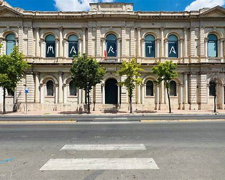

Musei Nazionali
MaRTA — Taranto
Il Museo Archeologico Nazionale di Taranto. Custodisce i celebri Ori di Taranto e una delle collezioni di manufatti e ceramiche dell'era greca più importanti d'Italia.